Charlotte neighborhoods
Local guides to the neighborhoods and towns we work in every week, what the housing is like, how people get around, and what's nearby. Every guide links straight to homes for sale there.
71 areas

Uptown Charlotte, also called Center City, is the city's central business district.
Photo: DaSon'e / CC BY 2.0
South End is a high-density commercial and residential district immediately southwest of Uptown.
Photo: Patch23 / CC0
Dilworth was Charlotte's first streetcar suburb, established in the 1890s by Edward Dilworth Latta on land southwest of the original city limits.
Photo: Hitkiller666 / CC BY-SA 4.0
Myers Park is one of Charlotte's best-known historic neighborhoods, developed beginning in 1911 on the former John Springs Myers farm.
Photo: Nyttend / Public domainEastover is a residential neighborhood southeast of Uptown, near Myers Park and Cotswold.
Photo: Expedia / CC BY-SA 4.0
Elizabeth is one of Charlotte's oldest in-town neighborhoods, just east of Uptown.
Photo: Nyttend / Public domain
Plaza Midwood is an in-town neighborhood about a mile east of Uptown, roughly bounded by Hawthorne Lane, The Plaza, Briar Creek Road and the Charlotte Country Club, and Central Avenue.
Photo: City Dweller 2 / CC BY-SA 4.0
NoDa, short for North Davidson, is Charlotte's best-known arts district, centered on North Davidson Street and 36th Street about two and a half miles northeast of Uptown.
Photo: Washuotaku / CC BY-SA 4.0
SouthPark is an edge city about six miles south of Uptown, centered at the intersection of Fairview Road and Sharon Road.
Photo: HangingCurve / CC BY-SA 4.0
Ballantyne is a roughly 2,000-acre planned district at Charlotte's southern edge, next to the South Carolina state line.
Photo: City Dweller 2 / CC BY-SA 4.0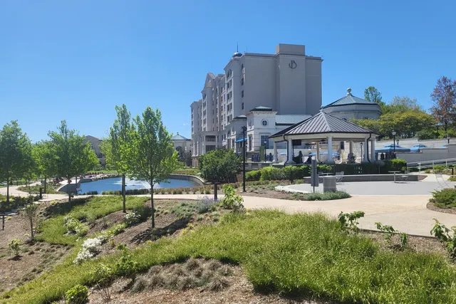
South Charlotte is a broad, informal name for the southern part of the city, generally stretching from the SouthPark and Quail Hollow areas south to Ballantyne and the South Carolina line, and east toward Providence Road.
Photo: City Dweller 2 / CC BY-SA 4.0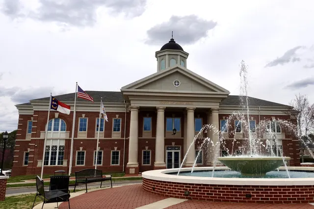
Mint Hill is a suburban town on Charlotte's southeast edge, located mostly in Mecklenburg County with a small portion in Union County.
Photo: Algorhythms / CC BY-SA 4.0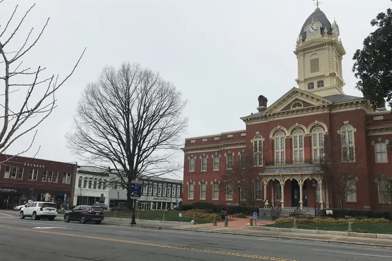
Union County borders Mecklenburg County to the southeast and is part of the Charlotte metropolitan area.
Photo: Indy beetle / CC0
Lake Norman is a man-made freshwater lake about 15 miles north of Charlotte, created between 1959 and 1964 during construction of Cowans Ford Dam by Duke Energy.
Photo: Christopher Sheridan / CC BY-SA 4.0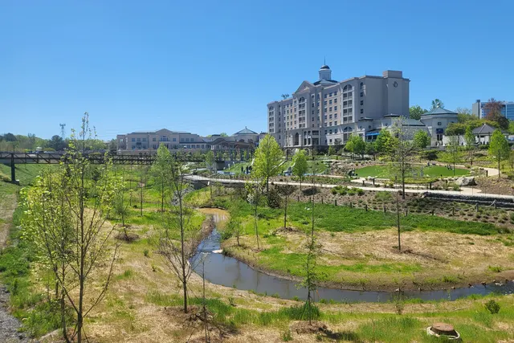
Ballantyne East is a real estate label used by listing portals for the residential area on the eastern side of greater Ballantyne, generally between Johnston Road and the Rea Road corridor north of the state line.
Photo: City Dweller 2 / CC BY-SA 4.0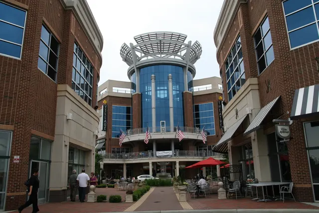
Ballantyne West is another portal-defined label, generally covering the residential area on the western side of greater Ballantyne, west of Johnston Road (US 521) toward Pineville.
Photo: Lori Bee / CC BY 2.0
Barclay Downs is an established residential neighborhood on the west side of SouthPark, close enough to SouthPark Mall that many residents can reach the shops on foot.
Photo: HangingCurve / CC BY-SA 4.0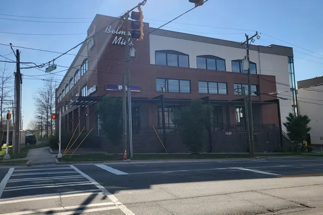
Belmont is a historic neighborhood just northeast of Uptown Charlotte, between Villa Heights and the Plaza Midwood area.
Photo: City Dweller 2 / CC BY-SA 4.0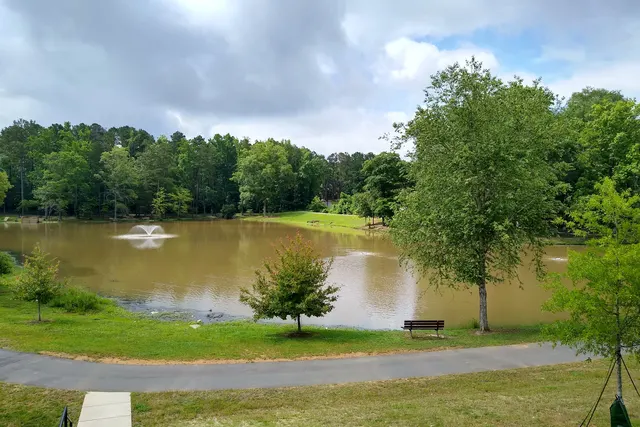
Beverly Woods is an established south Charlotte neighborhood located southwest of SouthPark near Park Road and Sharon Road.
Photo: Mx. Granger / CC0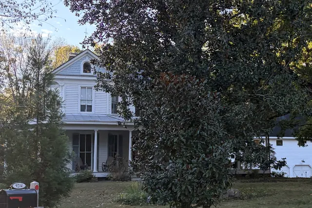
Blakeney is a south Charlotte community centered on the Blakeney shopping center near Rea Road and I-485.
Photo: Dclemens1971 / CC BY 4.0Bradfield Farms is a subdivision in far east Charlotte, near the Harrisburg Road and I-485 corridor and close to the Cabarrus County line.
Photo: 28215 / CC BY 3.0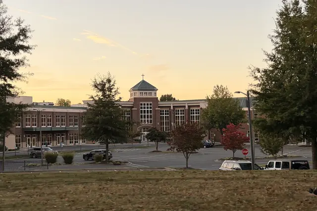
Carmel refers to the residential area along Carmel Road in south Charlotte, between the SouthPark/Quail Hollow area and Pineville-Matthews Road (NC 51).
Photo: Dclemens1971 / CC BY 4.0Chantilly is a small in-town neighborhood located between Elizabeth and Plaza Midwood, bounded roughly by Independence Boulevard, the railroad tracks, and Briar Creek.
Photo: Bobby Brandon / CC BY-SA 4.0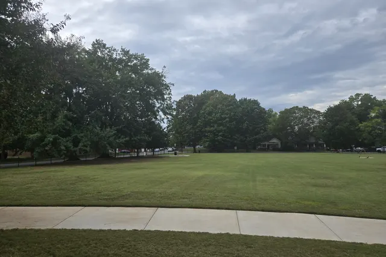
Cherry is one of Charlotte's oldest neighborhoods, located just southeast of Uptown near Midtown.
Photo: City Dweller 2 / CC BY-SA 4.0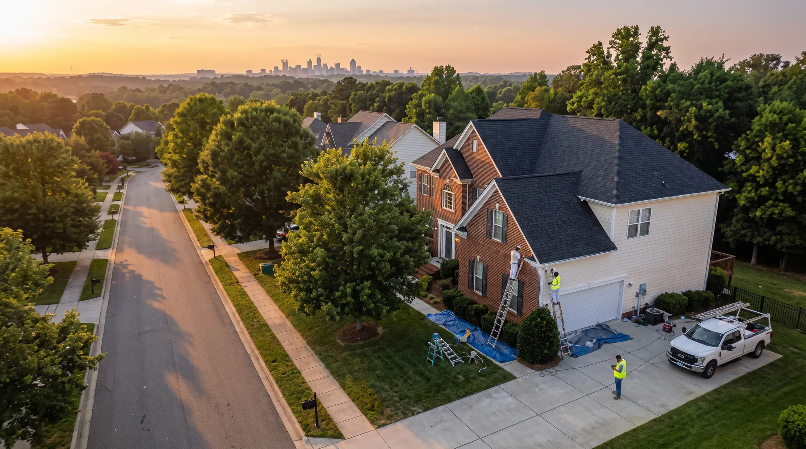
Cotswold takes its name from the Cotswolds region in England and is best known for Cotswold Village Shops at Randolph and Sharon Amity Roads, which began as Cotswold Mall, one of Charlotte's early suburban shopping centers.
Foxcroft is an established neighborhood northeast of SouthPark, between the Sharon Road and Providence Road corridors.
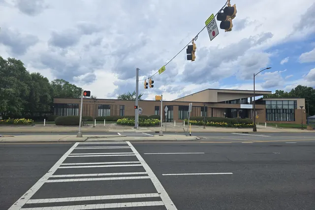
Hidden Valley is a large north Charlotte neighborhood developed beginning in 1959 by George S.
Photo: City Dweller 2 / CC BY-SA 4.0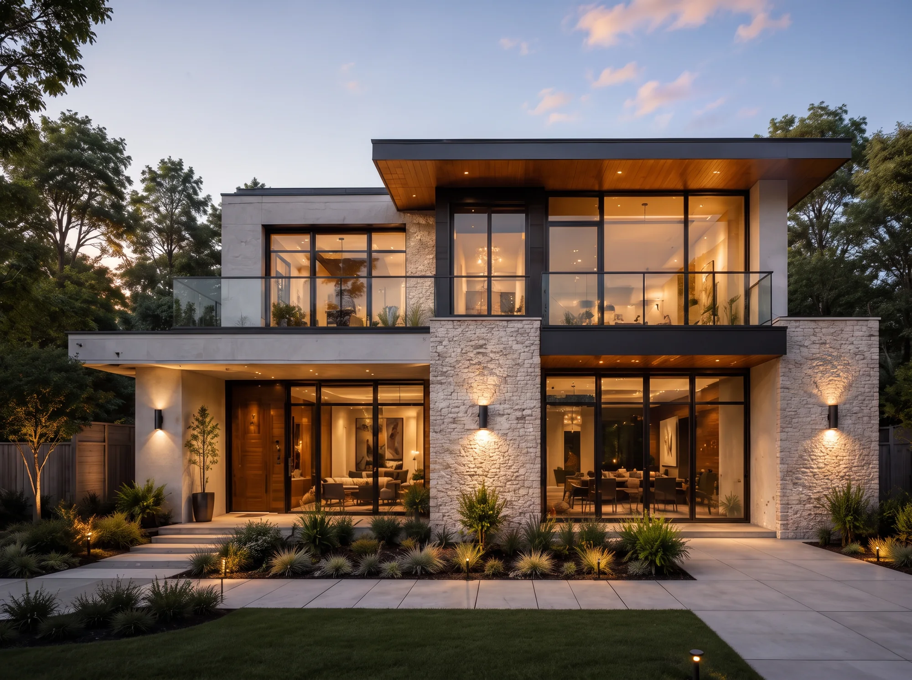
Highland Creek is a large master-planned community in northeast Charlotte, with a portion extending into Concord.
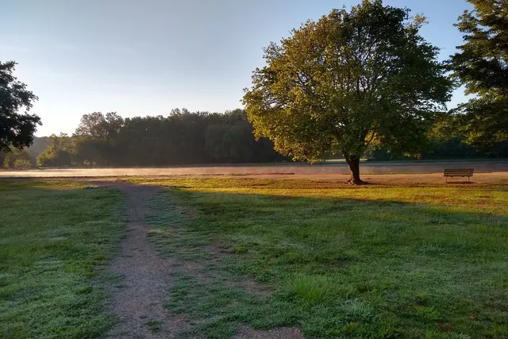
Idlewild refers to the residential area along Idlewild Road in east Charlotte, near Independence Boulevard (US 74) and the Matthews and Mint Hill borders.
Photo: City Dweller 2 / CC BY-SA 4.0Lansdowne is an established southeast Charlotte neighborhood near the Providence Road and Sardis Road corridors, east of SouthPark.
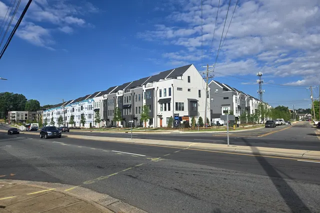
LoSo, short for Lower South End, is the name redevelopers and businesses adopted for the York Road area along South Tryon Street and South Boulevard, south of South End.
Photo: City Dweller 2 / CC BY-SA 4.0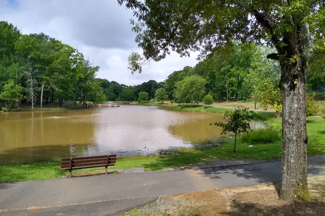
Madison Park is a south Charlotte neighborhood located between South Boulevard, East Woodlawn Road, and Park Road, extending slightly beyond Tyvola Road.
Photo: Mx. Granger / CC0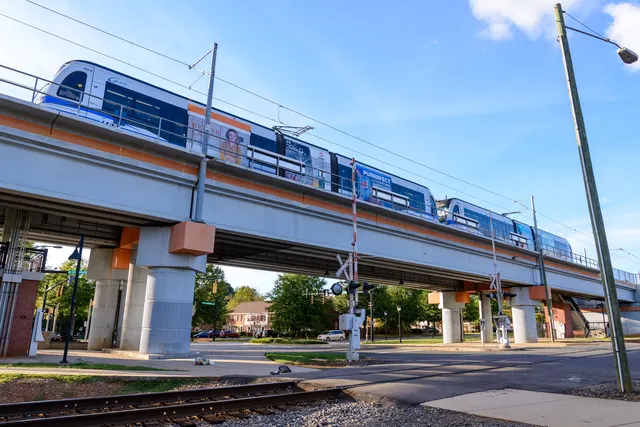
Montclaire is a mid-century south Charlotte neighborhood located between South Boulevard and Park Road, south of Madison Park.
Photo: Mark Clifton / CC BY-SA 2.0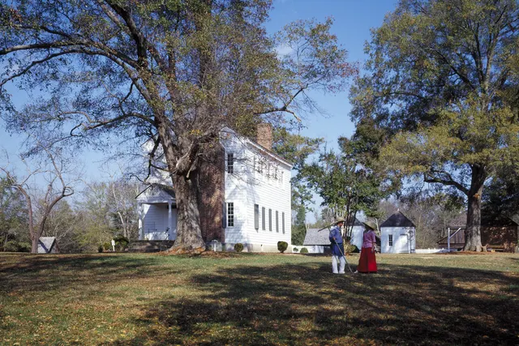
Mountain Island refers to the northwest Charlotte area near Mountain Island Lake, a Catawba River reservoir that also serves as a major drinking-water source for the region.
Photo: Carol M. Highsmith / Public domain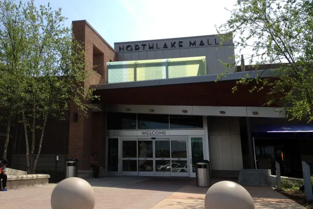
Northlake is the north Charlotte area around Northlake Mall, near the interchange of I-77 and I-485.
Photo: Mike Kalasnik from Charlotte, USA / CC BY-SA 2.0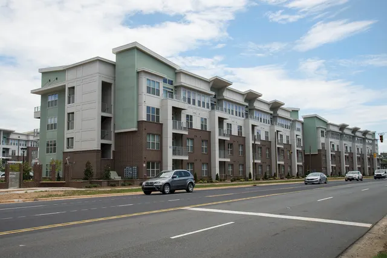
Oakhurst is an east Charlotte neighborhood located near Monroe Road and Independence Boulevard, a short distance from Bojangles Coliseum and Ovens Auditorium.
Photo: CLTmatt / CC BY-SA 4.0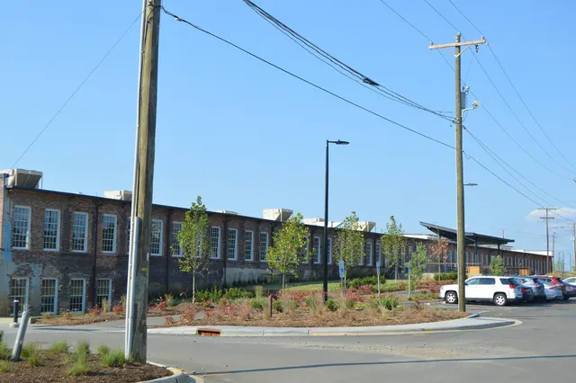
Optimist Park is a historic mill neighborhood just northeast of Uptown, between Uptown and NoDa.
Photo: Nyttend / Public domain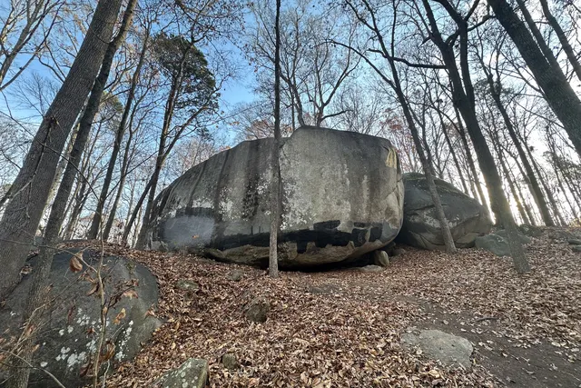
Piper Glen is a golf community in south Charlotte, located off Rea Road between the Ballantyne and Providence Road corridors.
Photo: Lordgilman / CC0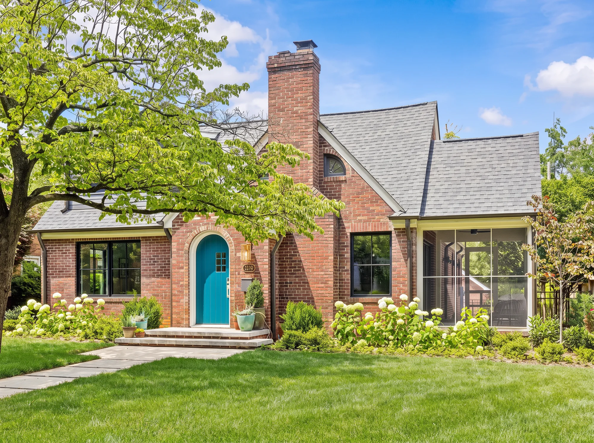
Providence Park is a small, established residential neighborhood off Providence Road in southeast Charlotte, between the Cotswold area and SouthPark.
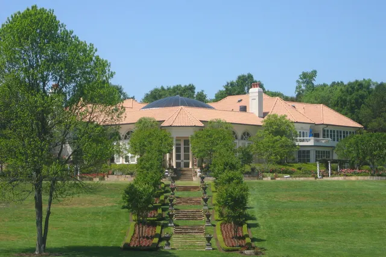
Quail Hollow is a largely residential area in south Charlotte, located roughly between Park Road and Carmel Road, south of SouthPark.
Photo: MCHart / CC BY 2.0Rea Farms is a mixed-use development in south Charlotte near Providence Road and Ardrey Kell Road, close to I-485.
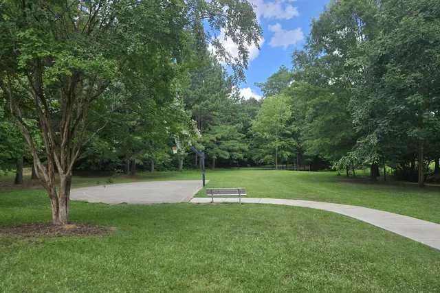
Sedgefield is a neighborhood situated between South Boulevard and Park Road, just south of Dilworth and adjacent to South End.
Photo: City Dweller 2 / CC BY-SA 4.0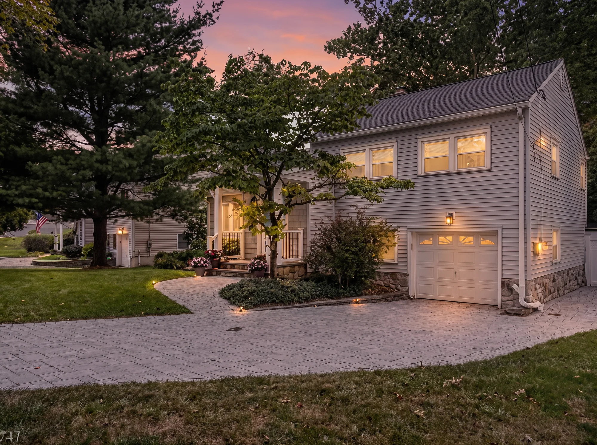
Sharon Woods is an established neighborhood just south of the SouthPark district, near Sharon Road.

Steele Creek is a community in southwest Mecklenburg County, generally defined by the boundaries of the original Steele Creek Township.
Photo: Bagatar / CC BY-SA 3.0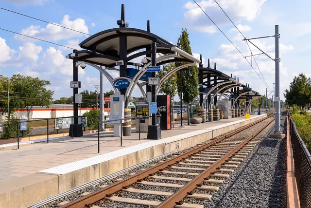
Starmount is a predominantly residential neighborhood in south Charlotte along South Boulevard, between Sharon Road West and Emerywood Drive, with Little Sugar Creek forming its eastern border.
Photo: Mark Clifton / CC BY-SA 2.0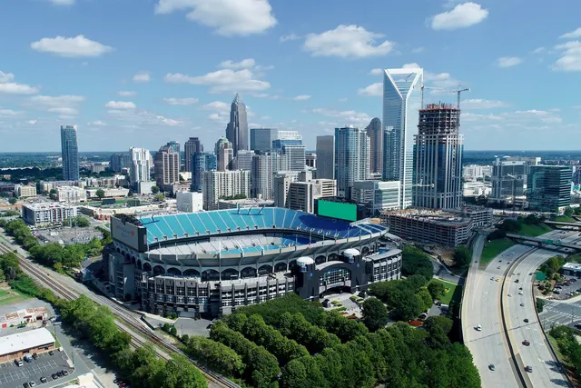
Third Ward is one of Uptown Charlotte's four original wards, occupying the southwest quadrant formed by Trade and Tryon Streets.
Photo: Precisionviews / CC BY-SA 4.0
University City is a large area in northeast Charlotte centered on the University of North Carolina at Charlotte and the University Research Park.
Photo: Stanton49 / CC BY-SA 4.0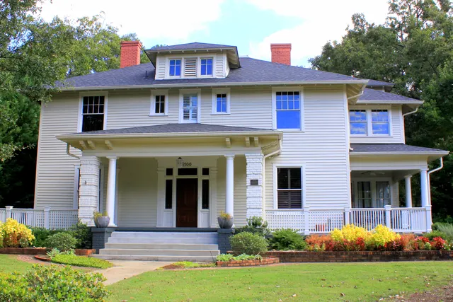
Villa Heights is an in-town neighborhood northeast of Uptown, between Plaza Midwood and NoDa.
Photo: RoxylovesHistory / CC BY-SA 4.0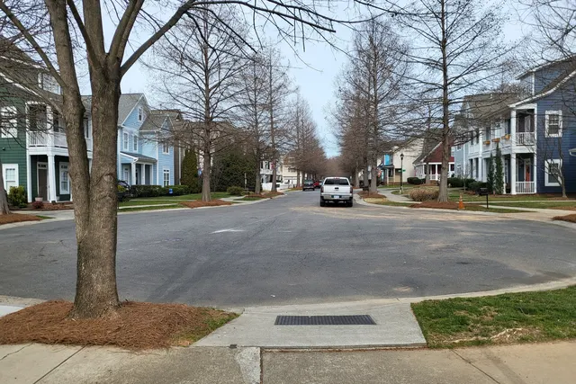
Wesley Heights is a historic neighborhood just west of Uptown, developed in the early 20th century as a streetcar suburb.
Photo: City Dweller 2 / CC BY-SA 4.0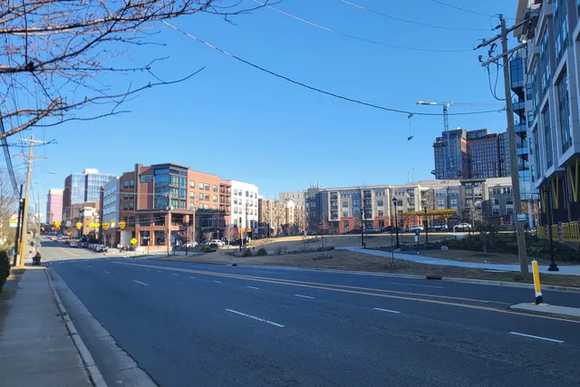
Wilmore is a historic neighborhood just west of South End and southwest of Uptown.
Photo: City Dweller 2 / CC BY-SA 4.0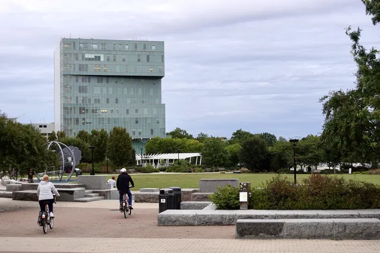
First Ward is Uptown Charlotte's northeast quadrant.
Photo: Algorhythms / CC BY-SA 4.0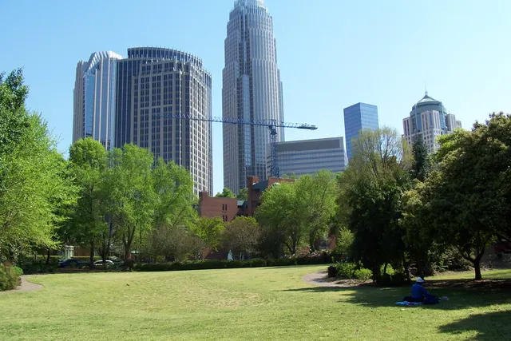
Fourth Ward is Uptown Charlotte's northwest quadrant and its most historic residential area.
Photo: James Willamor / CC BY-SA 3.0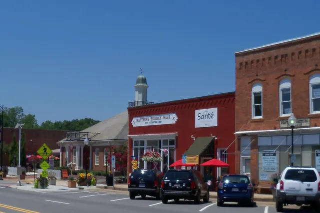
Matthews is a town in southeastern Mecklenburg County, bordering Charlotte, with a population of 29,435 at the 2020 census.
Photo: Jon Platek / CC BY-SA 3.0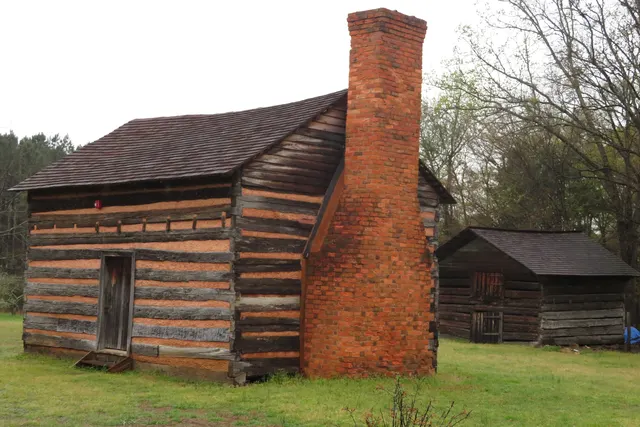
Pineville is a small town at the southern tip of Mecklenburg County, between Charlotte and Fort Mill, South Carolina.
Photo: Ken Lund from Reno, Nevada, USA / CC BY-SA 2.0
Huntersville is a suburban town in northern Mecklenburg County, about 14 miles north of Charlotte.
Photo: Brett VA / CC BY 2.0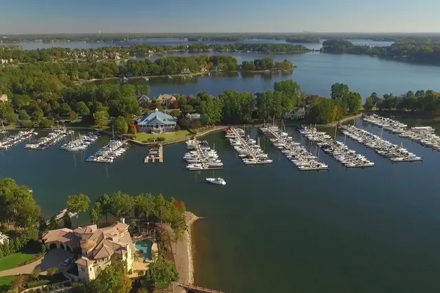
Cornelius is a suburban town along Lake Norman in northern Mecklenburg County.
Photo: LakeNormanMike / CC BY 4.0Davidson is a small town in Mecklenburg and Iredell counties, founded in 1837 with the establishment of Davidson College, a private liberal arts college.
Photo: Dacoslett at English Wikipedia / Public domain
Belmont is a small suburban city in Gaston County, about 9 miles east of Gastonia and just across the Catawba River from western Mecklenburg County.
Photo: Indy beetle / CC0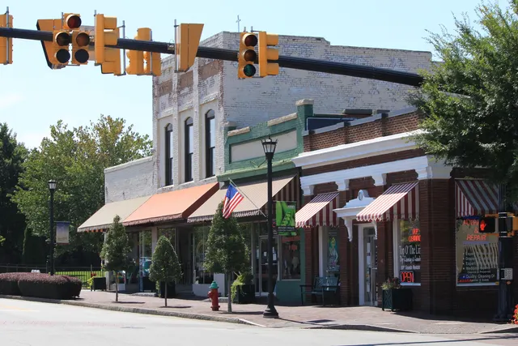
Mount Holly is a small suburban city in northeastern Gaston County, situated just west of the Catawba River, north of I-85, and south of NC 16.
Photo: RoxylovesHistory / CC BY-SA 3.0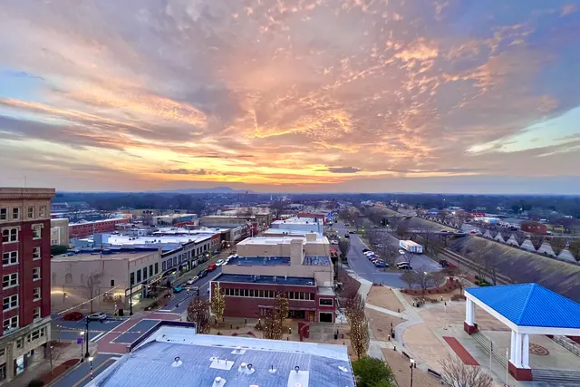
Gastonia is the county seat and most populous city of Gaston County, with a population of 80,411 at the 2020 census.
Photo: GastoniaHappening Jim Bob Willy / CC BY-SA 4.0
Fort Mill is a town in York County, South Carolina, just south of the North Carolina line.
Photo: Photogeographer / CC BY-SA 4.0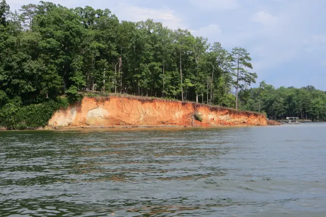
Tega Cay is a planned city in York County, South Carolina, located on a peninsula along Lake Wylie, west of Fort Mill and north of Rock Hill.
Photo: bobcapra / CC BY 2.0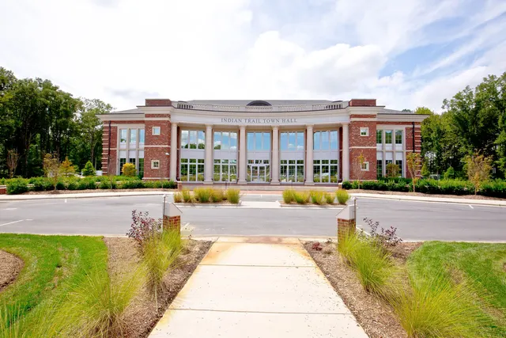
Indian Trail is a town in Union County, southeast of Charlotte.
Photo: Abbeynball / CC BY-SA 4.0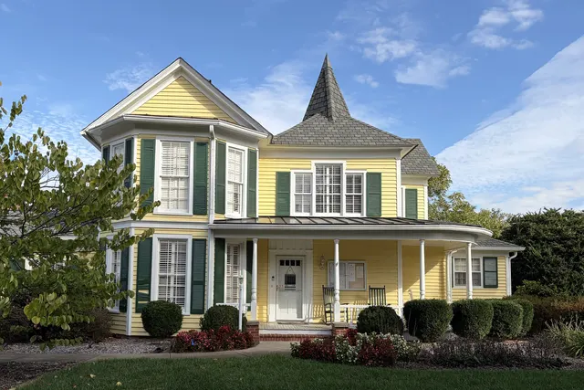
Weddington is a suburban town in Union County, southeast of Charlotte.
Photo: Dclemens1971 / CC BY 4.0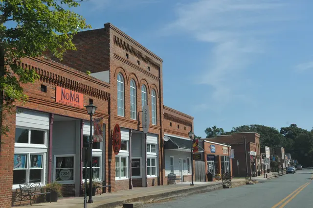
Waxhaw is an incorporated town in Union County, south of Charlotte.
Photo: Jerrye & Roy Klotz, MD / CC BY-SA 3.0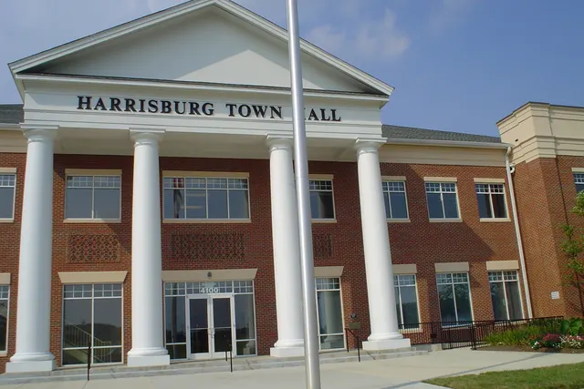
Harrisburg is a town in Cabarrus County, northeast of Charlotte, with a population of 18,967 at the 2020 census.
Photo: James Willamor / CC BY-SA 3.0
Concord is the county seat and most populous city of Cabarrus County, about 20 miles northeast of Uptown Charlotte.
Photo: AlexiusHoratius / CC BY-SA 3.0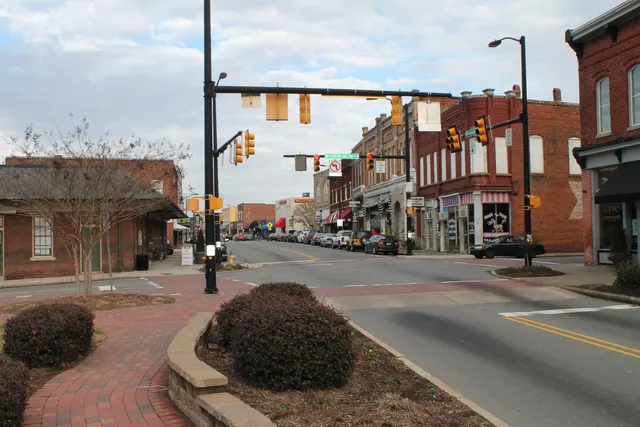
Mooresville is a town in southwestern Iredell County, about 25 miles north of Charlotte.
Photo: Cdtew at English Wikipedia / CC BY-SA 3.0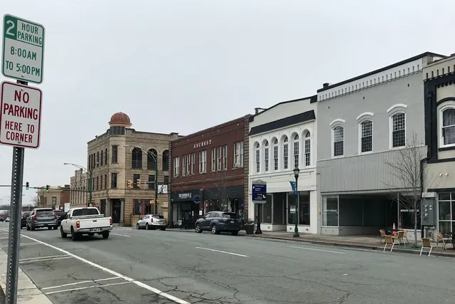
Monroe is a city and the county seat of Union County, southeast of Charlotte.
Photo: Indy beetle / CC0Lake Wylie is a census-designated place in York County, South Carolina, located on a peninsula along the shore of Lake Wylie.
Photo: Madhan Karthikeyan / CC BY 2.0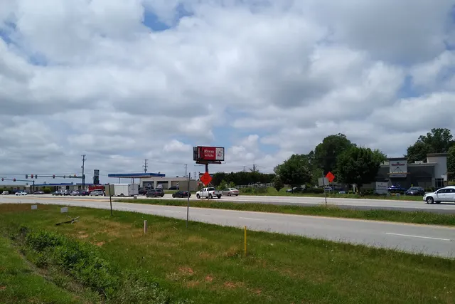
Indian Land is an unincorporated community in the northern panhandle of Lancaster County, South Carolina, east of Fort Mill and west of Marvin and Waxhaw, North Carolina.
Photo: Mx. Granger / CC0Not sure where to start? Try the neighborhood finder, it matches on budget, home type and amenities.
438 communities
Looking for a specific subdivision, condo building or ZIP?
Every community page from the original SearchCharlotte.com is here at the same address, rebuilt with maps and what's nearby.